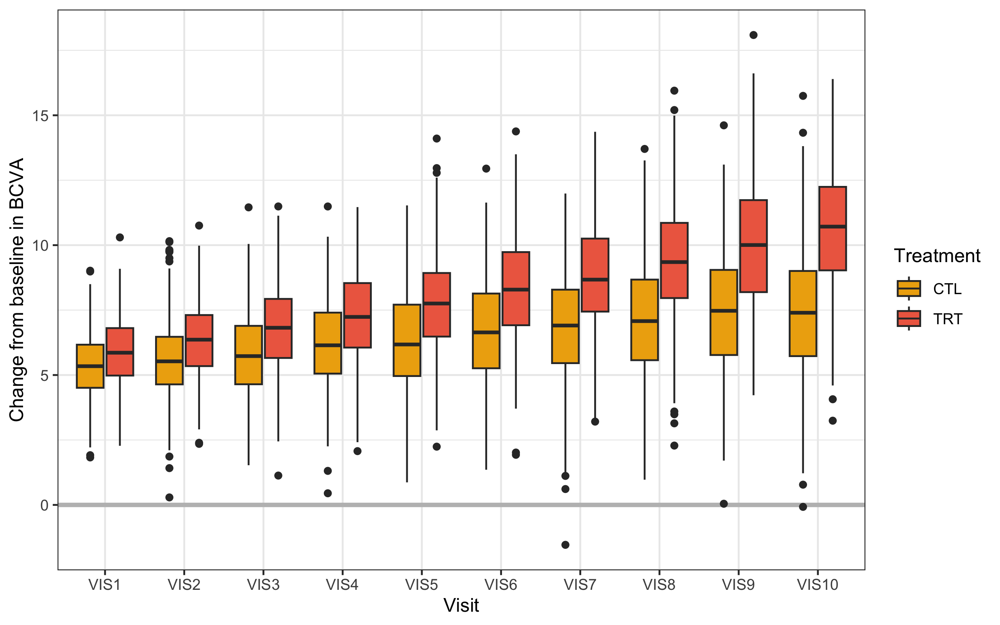

BCVA data comparison between Bayesian and frequentist MMRMs
20/10/2026
Source:vignettes/bcva.Rmd
bcva.RmdAbout
This vignette uses the bcva_data dataset from the
mmrm package to compare a Bayesian MMRM fit, obtained by
brms.mmrm::brm_model(), and a frequentist MMRM fit,
obtained by mmrm::mmrm(). An overview of parameter
estimates and differences by type of MMRM is given in the summary (Tables 4 and 5) at the end.
Prerequisites
This comparison workflow requires the following packages.
> packages <- c(
+ "dplyr",
+ "tidyr",
+ "ggplot2",
+ "gt",
+ "gtsummary",
+ "purrr",
+ "parallel",
+ "brms.mmrm",
+ "mmrm",
+ "posterior"
+ )
> invisible(lapply(packages, library, character.only = TRUE))We set a seed for the random number generator to ensure statistical reproducibility.
Data
Pre-processing
This analysis exercise uses the bcva_data dataset
contained in the mmrm package:
According to https://openpharma.github.io/mmrm/latest-tag/articles/mmrm_review_methods.html:
The BCVA dataset contains data from a randomized longitudinal ophthalmology trial evaluating the change in baseline corrected visual acuity (BCVA) over the course of 10 visits. BCVA corresponds to the number of letters read from a visual acuity chart.
The dataset is a tibble with 8605 rows and the following
notable variables.
-
USUBJID(subject ID) -
AVISIT(visit number, factor) -
VISITN(visit number, numeric) -
ARMCD(treatment,TRTorCTL) -
RACE(3-category race) -
BCVA_BL(BCVA at baseline) -
BCVA_CHG(BCVA change from baseline, primary endpoint for the analysis)
The rest of the pre-processing steps create factors for the study arm
and visit and apply the usual checking and standardization steps of
brms.mmrm::brm_data().
> bcva_data <- bcva_data |>
+ mutate(AVISIT = gsub("VIS0*", "VIS", as.character(AVISIT))) |>
+ brm_data(
+ outcome = "BCVA_CHG",
+ group = "ARMCD",
+ time = "AVISIT",
+ patient = "USUBJID",
+ baseline = "BCVA_BL",
+ reference_group = "CTL",
+ covariates = "RACE"
+ ) |>
+ brm_data_chronologize(order = "VISITN")The following table shows the first rows of the dataset.
> head(bcva_data) |>
+ gt() |>
+ tab_caption(caption = md("Table 1. First rows of the pre-processed `bcva_data` dataset."))| USUBJID | AVISIT | VISITN | ARMCD | RACE | BCVA_BL | BCVA_CHG |
|---|---|---|---|---|---|---|
| 3 | VIS1 | 1 | CTL | Asian | 71.70881 | 5.058546 |
| 3 | VIS10 | 10 | CTL | Asian | 71.70881 | 10.152565 |
| 3 | VIS2 | 2 | CTL | Asian | 71.70881 | 4.018582 |
| 3 | VIS3 | 3 | CTL | Asian | 71.70881 | 3.572535 |
| 3 | VIS4 | 4 | CTL | Asian | 71.70881 | 4.822669 |
| 3 | VIS5 | 5 | CTL | Asian | 71.70881 | 7.348768 |
Descriptive statistics
Table of baseline characteristics:
> bcva_data |>
+ select(ARMCD, USUBJID, RACE, BCVA_BL) |>
+ distinct() |>
+ select(-USUBJID) |>
+ tbl_summary(
+ by = c(ARMCD),
+ statistic = list(
+ all_continuous() ~ "{mean} ({sd})",
+ all_categorical() ~ "{n} / {N} ({p}%)"
+ )
+ ) |>
+ modify_caption("Table 2. Baseline characteristics.")| Characteristic |
CTL N = 4941 |
TRT N = 5061 |
|---|---|---|
| RACE | ||
| Asian | 151 / 494 (31%) | 146 / 506 (29%) |
| Black | 149 / 494 (30%) | 168 / 506 (33%) |
| White | 194 / 494 (39%) | 192 / 506 (38%) |
| BCVA_BL | 75 (10) | 75 (10) |
| 1 n / N (%); Mean (SD) | ||
Table of change from baseline in BCVA over 52 weeks:
> bcva_data |>
+ pull(AVISIT) |>
+ unique() |>
+ sort() |>
+ purrr::map(
+ .f = ~ bcva_data |>
+ filter(AVISIT %in% .x) |>
+ tbl_summary(
+ by = ARMCD,
+ include = BCVA_CHG,
+ type = BCVA_CHG ~ "continuous2",
+ statistic = BCVA_CHG ~ c(
+ "{mean} ({sd})",
+ "{median} ({p25}, {p75})",
+ "{min}, {max}"
+ ),
+ label = list(BCVA_CHG = paste("Visit ", .x))
+ )
+ ) |>
+ tbl_stack(quiet = TRUE) |>
+ modify_caption("Table 3. Change from baseline.")| Characteristic | CTL N = 494 |
TRT N = 506 |
|---|---|---|
| Visit VIS1 | ||
| Mean (SD) | 5.32 (1.23) | 5.86 (1.33) |
| Median (Q1, Q3) | 5.34 (4.51, 6.17) | 5.86 (4.98, 6.81) |
| Min, Max | 1.83, 9.02 | 2.28, 10.30 |
| Unknown | 12 | 5 |
| Visit VIS2 | ||
| Mean (SD) | 5.59 (1.49) | 6.33 (1.45) |
| Median (Q1, Q3) | 5.53 (4.64, 6.47) | 6.36 (5.34, 7.31) |
| Min, Max | 0.29, 10.15 | 2.35, 10.75 |
| Unknown | 13 | 7 |
| Visit VIS3 | ||
| Mean (SD) | 5.79 (1.61) | 6.79 (1.71) |
| Median (Q1, Q3) | 5.73 (4.64, 6.91) | 6.82 (5.66, 7.93) |
| Min, Max | 1.53, 11.46 | 1.13, 11.49 |
| Unknown | 23 | 17 |
| Visit VIS4 | ||
| Mean (SD) | 6.18 (1.73) | 7.29 (1.82) |
| Median (Q1, Q3) | 6.14 (5.05, 7.41) | 7.24 (6.05, 8.54) |
| Min, Max | 0.45, 11.49 | 2.07, 11.47 |
| Unknown | 36 | 18 |
| Visit VIS5 | ||
| Mean (SD) | 6.28 (1.97) | 7.68 (1.94) |
| Median (Q1, Q3) | 6.18 (4.96, 7.71) | 7.75 (6.48, 8.95) |
| Min, Max | 0.87, 11.53 | 2.24, 14.10 |
| Unknown | 40 | 35 |
| Visit VIS6 | ||
| Mean (SD) | 6.69 (1.97) | 8.31 (1.98) |
| Median (Q1, Q3) | 6.64 (5.26, 8.14) | 8.29 (6.92, 9.74) |
| Min, Max | 1.35, 12.95 | 1.93, 14.38 |
| Unknown | 84 | 48 |
| Visit VIS7 | ||
| Mean (SD) | 6.78 (2.09) | 8.78 (2.11) |
| Median (Q1, Q3) | 6.91 (5.46, 8.29) | 8.67 (7.44, 10.26) |
| Min, Max | -1.54, 11.99 | 3.21, 14.36 |
| Unknown | 106 | 78 |
| Visit VIS8 | ||
| Mean (SD) | 7.08 (2.25) | 9.40 (2.26) |
| Median (Q1, Q3) | 7.08 (5.55, 8.68) | 9.35 (7.96, 10.86) |
| Min, Max | 0.97, 13.71 | 2.28, 15.95 |
| Unknown | 123 | 86 |
| Visit VIS9 | ||
| Mean (SD) | 7.39 (2.33) | 10.01 (2.50) |
| Median (Q1, Q3) | 7.47 (5.76, 9.05) | 10.01 (8.19, 11.74) |
| Min, Max | 0.04, 14.61 | 4.22, 18.09 |
| Unknown | 167 | 114 |
| Visit VIS10 | ||
| Mean (SD) | 7.49 (2.58) | 10.59 (2.36) |
| Median (Q1, Q3) | 7.40 (5.73, 9.01) | 10.71 (9.03, 12.25) |
| Min, Max | -0.08, 15.75 | 3.24, 16.40 |
| Unknown | 213 | 170 |
The following figure shows the primary endpoint over the four study visits in the data.
> bcva_data |>
+ group_by(ARMCD) |>
+ ggplot(aes(x = AVISIT, y = BCVA_CHG, fill = factor(ARMCD))) +
+ geom_hline(yintercept = 0, col = "grey", linewidth = 1.2) +
+ geom_boxplot(na.rm = TRUE) +
+ labs(
+ x = "Visit",
+ y = "Change from baseline in BCVA",
+ fill = "Treatment"
+ ) +
+ scale_fill_manual(values = c("darkgoldenrod2", "coral2")) +
+ theme_bw()
Figure 1. Change from baseline in BCVA over 4 visit time points.
Fitting MMRMs
Bayesian model
The formula for the Bayesian model includes additive effects for baseline, study visit, race, and study-arm-by-visit interaction.
> b_mmrm_formula <- brm_formula(
+ data = bcva_data,
+ intercept = TRUE,
+ baseline = TRUE,
+ group = FALSE,
+ time = TRUE,
+ baseline_time = FALSE,
+ group_time = TRUE,
+ correlation = "unstructured"
+ )
> print(b_mmrm_formula)
#> BCVA_CHG ~ BCVA_BL + ARMCD:AVISIT + AVISIT + RACE + unstr(time = AVISIT, gr = USUBJID)
#> sigma ~ 0 + AVISITWe fit the model using brms.mmrm::brm_model(). The
computation takes several minutes because of the size of the dataset. To
ensure a good basis of comparison with the frequentist model, we put an
extremely diffuse prior on the intercept. The parameters already have
diffuse flexible priors by default.
> b_mmrm_fit <- brm_model(
+ data = filter(bcva_data, !is.na(BCVA_CHG)),
+ formula = b_mmrm_formula,
+ prior = brms::prior(class = "Intercept", prior = "student_t(3, 0, 1000)"),
+ iter = 10000,
+ warmup = 2000,
+ chains = 4,
+ cores = 4,
+ seed = 1,
+ refresh = 0
+ )
#> Running MCMC with 4 parallel chains...
#>
#> Chain 4 finished in 321.6 seconds.
#> Chain 1 finished in 323.9 seconds.
#> Chain 2 finished in 324.1 seconds.
#> Chain 3 finished in 324.8 seconds.
#>
#> All 4 chains finished successfully.
#> Mean chain execution time: 323.6 seconds.
#> Total execution time: 325.1 seconds.Here is a posterior summary of model parameters, including fixed effects and pairwise correlation among visits within patients.
> summary(b_mmrm_fit)
#> Family: gaussian
#> Links: mu = identity; sigma = log
#> Formula: BCVA_CHG ~ BCVA_BL + ARMCD:AVISIT + AVISIT + RACE + unstr(time = AVISIT, gr = USUBJID)
#> sigma ~ 0 + AVISIT
#> Data: modeled_data (Number of observations: 8605)
#> Draws: 4 chains, each with iter = 10000; warmup = 2000; thin = 1;
#> total post-warmup draws = 32000
#>
#> Correlation Structures:
#> Estimate Est.Error l-95% CI u-95% CI Rhat Bulk_ESS Tail_ESS
#> cortime(VIS1,VIS2) 0.05 0.03 -0.01 0.11 1.00 70766 23698
#> cortime(VIS1,VIS3) 0.31 0.03 0.25 0.37 1.00 68979 25441
#> cortime(VIS2,VIS3) 0.05 0.03 -0.02 0.11 1.00 71865 23449
#> cortime(VIS1,VIS4) 0.21 0.03 0.15 0.27 1.00 45833 26729
#> cortime(VIS2,VIS4) 0.13 0.03 0.07 0.20 1.00 51270 27527
#> cortime(VIS3,VIS4) -0.01 0.03 -0.07 0.05 1.00 51927 27434
#> cortime(VIS1,VIS5) 0.17 0.03 0.11 0.23 1.00 48586 27126
#> cortime(VIS2,VIS5) 0.12 0.03 0.05 0.18 1.00 53272 26189
#> cortime(VIS3,VIS5) -0.01 0.03 -0.07 0.06 1.00 51985 26968
#> cortime(VIS4,VIS5) 0.38 0.03 0.32 0.43 1.00 55081 27007
#> cortime(VIS1,VIS6) 0.26 0.03 0.20 0.32 1.00 44987 28229
#> cortime(VIS2,VIS6) 0.20 0.03 0.14 0.27 1.00 48180 26585
#> cortime(VIS3,VIS6) 0.04 0.03 -0.02 0.11 1.00 52986 27088
#> cortime(VIS4,VIS6) 0.40 0.03 0.35 0.46 1.00 49218 26558
#> cortime(VIS5,VIS6) 0.39 0.03 0.34 0.45 1.00 56414 27573
#> cortime(VIS1,VIS7) 0.07 0.03 -0.00 0.13 1.00 70294 24615
#> cortime(VIS2,VIS7) 0.09 0.03 0.02 0.15 1.00 66725 24883
#> cortime(VIS3,VIS7) -0.00 0.03 -0.07 0.07 1.00 73097 24926
#> cortime(VIS4,VIS7) 0.15 0.04 0.08 0.21 1.00 66204 24580
#> cortime(VIS5,VIS7) 0.19 0.03 0.13 0.26 1.00 67064 24648
#> cortime(VIS6,VIS7) 0.21 0.04 0.14 0.28 1.00 63628 24809
#> cortime(VIS1,VIS8) 0.05 0.04 -0.02 0.12 1.00 65076 24590
#> cortime(VIS2,VIS8) 0.10 0.04 0.03 0.17 1.00 61541 23411
#> cortime(VIS3,VIS8) -0.03 0.04 -0.10 0.04 1.00 68915 23642
#> cortime(VIS4,VIS8) 0.17 0.03 0.10 0.24 1.00 66513 24426
#> cortime(VIS5,VIS8) 0.17 0.04 0.10 0.24 1.00 72143 24001
#> cortime(VIS6,VIS8) 0.16 0.04 0.09 0.23 1.00 68019 22354
#> cortime(VIS7,VIS8) 0.05 0.04 -0.02 0.13 1.00 69488 22490
#> cortime(VIS1,VIS9) 0.03 0.04 -0.04 0.10 1.00 72596 22632
#> cortime(VIS2,VIS9) -0.01 0.04 -0.08 0.07 1.00 72117 23400
#> cortime(VIS3,VIS9) -0.04 0.04 -0.12 0.03 1.00 71950 23830
#> cortime(VIS4,VIS9) 0.12 0.04 0.04 0.19 1.00 71100 24051
#> cortime(VIS5,VIS9) 0.09 0.04 0.02 0.16 1.00 65967 24435
#> cortime(VIS6,VIS9) 0.17 0.04 0.09 0.24 1.00 70889 23582
#> cortime(VIS7,VIS9) 0.02 0.04 -0.06 0.09 1.00 68516 23451
#> cortime(VIS8,VIS9) 0.06 0.04 -0.02 0.14 1.00 68542 24109
#> cortime(VIS1,VIS10) 0.02 0.04 -0.06 0.10 1.00 59437 23707
#> cortime(VIS2,VIS10) 0.13 0.04 0.05 0.20 1.00 61864 26343
#> cortime(VIS3,VIS10) 0.02 0.04 -0.06 0.10 1.00 59350 25346
#> cortime(VIS4,VIS10) 0.31 0.04 0.24 0.38 1.00 61632 25167
#> cortime(VIS5,VIS10) 0.24 0.04 0.16 0.31 1.00 69597 24322
#> cortime(VIS6,VIS10) 0.30 0.04 0.22 0.37 1.00 67204 25575
#> cortime(VIS7,VIS10) 0.06 0.05 -0.03 0.15 1.00 71232 23677
#> cortime(VIS8,VIS10) 0.09 0.04 0.01 0.18 1.00 70814 22786
#> cortime(VIS9,VIS10) 0.08 0.05 -0.01 0.17 1.00 68742 24036
#>
#> Regression Coefficients:
#> Estimate Est.Error l-95% CI u-95% CI Rhat Bulk_ESS Tail_ESS
#> Intercept 4.29 0.17 3.95 4.63 1.00 54294 24172
#> BCVA_BL -0.00 0.00 -0.01 0.00 1.00 56220 21798
#> AVISIT2 0.28 0.07 0.14 0.42 1.00 30102 26502
#> AVISIT3 0.46 0.07 0.32 0.59 1.00 44737 25450
#> AVISIT4 0.86 0.08 0.71 1.01 1.00 27721 26054
#> AVISIT5 0.96 0.09 0.80 1.13 1.00 28468 26157
#> AVISIT6 1.33 0.09 1.16 1.50 1.00 27615 26450
#> AVISIT7 1.42 0.11 1.20 1.63 1.00 33029 25926
#> AVISIT8 1.71 0.12 1.49 1.94 1.00 36166 26846
#> AVISIT9 2.00 0.13 1.75 2.25 1.00 38164 26071
#> AVISIT10 2.10 0.14 1.82 2.38 1.00 31477 25593
#> RACEBlack 1.04 0.06 0.93 1.15 1.00 54357 26552
#> RACEWhite 2.01 0.05 1.90 2.11 1.00 51242 26367
#> AVISITVIS1:ARMCDTRT 0.54 0.06 0.42 0.66 1.00 35064 27718
#> AVISITVIS2:ARMCDTRT 0.72 0.08 0.57 0.88 1.00 49014 24890
#> AVISITVIS3:ARMCDTRT 1.01 0.09 0.83 1.19 1.00 45317 25013
#> AVISITVIS4:ARMCDTRT 1.10 0.10 0.91 1.30 1.00 36685 26405
#> AVISITVIS5:ARMCDTRT 1.38 0.11 1.16 1.61 1.00 35636 25859
#> AVISITVIS6:ARMCDTRT 1.63 0.12 1.40 1.86 1.00 34644 26364
#> AVISITVIS7:ARMCDTRT 2.02 0.14 1.74 2.29 1.00 43038 25191
#> AVISITVIS8:ARMCDTRT 2.35 0.15 2.06 2.64 1.00 44068 25411
#> AVISITVIS9:ARMCDTRT 2.66 0.16 2.33 2.98 1.00 46208 24464
#> AVISITVIS10:ARMCDTRT 3.07 0.18 2.72 3.43 1.00 38130 25317
#> sigma_AVISITVIS1 -0.01 0.02 -0.06 0.03 1.00 65722 24173
#> sigma_AVISITVIS2 0.23 0.02 0.18 0.27 1.00 77511 23552
#> sigma_AVISITVIS3 0.36 0.02 0.31 0.40 1.00 70583 26227
#> sigma_AVISITVIS4 0.44 0.02 0.40 0.49 1.00 55766 26867
#> sigma_AVISITVIS5 0.57 0.02 0.52 0.61 1.00 62540 25935
#> sigma_AVISITVIS6 0.58 0.02 0.53 0.63 1.00 55298 26419
#> sigma_AVISITVIS7 0.69 0.03 0.64 0.74 1.00 68520 22417
#> sigma_AVISITVIS8 0.74 0.03 0.69 0.79 1.00 71145 24432
#> sigma_AVISITVIS9 0.80 0.03 0.75 0.85 1.00 76082 23123
#> sigma_AVISITVIS10 0.84 0.03 0.79 0.90 1.00 65551 24406
#>
#> Draws were sampled using sample(hmc). For each parameter, Bulk_ESS
#> and Tail_ESS are effective sample size measures, and Rhat is the potential
#> scale reduction factor on split chains (at convergence, Rhat = 1).Frequentist model
The formula for the frequentist model is the same, except for the different syntax for specifying the covariance structure of the MMRM. We fit the model below.
> f_mmrm_fit <- mmrm::mmrm(
+ formula = BCVA_CHG ~ BCVA_BL + ARMCD:AVISIT + AVISIT + RACE +
+ us(AVISIT | USUBJID),
+ data = mutate(
+ bcva_data,
+ AVISIT = factor(as.character(AVISIT), ordered = FALSE)
+ )
+ )The parameter summaries of the frequentist model are below.
> summary(f_mmrm_fit)
#> mmrm fit
#>
#> Formula: BCVA_CHG ~ BCVA_BL + ARMCD:AVISIT + AVISIT + RACE + us(AVISIT | USUBJID)
#> Data: mutate(bcva_data, AVISIT = factor(as.character(AVISIT), ordered = FALSE)) (used 8605
#> observations from 1000 subjects with maximum 10 timepoints)
#> Covariance: unstructured (55 variance parameters)
#> Method: Satterthwaite
#> Vcov Method: Asymptotic
#> Inference: REML
#>
#> Model selection criteria:
#> AIC BIC logLik deviance
#> 32181.0 32451.0 -16035.5 32071.0
#>
#> Coefficients:
#> Estimate Std. Error df t value Pr(>|t|)
#> (Intercept) 4.288e+00 1.709e-01 1.065e+03 25.085 < 2e-16 ***
#> BCVA_BL -9.935e-04 2.156e-03 9.905e+02 -0.461 0.645
#> AVISITVIS10 2.101e+00 1.400e-01 7.025e+02 15.003 < 2e-16 ***
#> AVISITVIS2 2.810e-01 7.067e-02 9.995e+02 3.976 7.51e-05 ***
#> AVISITVIS3 4.573e-01 6.716e-02 9.747e+02 6.809 1.71e-11 ***
#> AVISITVIS4 8.570e-01 7.636e-02 9.796e+02 11.222 < 2e-16 ***
#> AVISITVIS5 9.638e-01 8.634e-02 9.630e+02 11.163 < 2e-16 ***
#> AVISITVIS6 1.334e+00 8.650e-02 9.451e+02 15.421 < 2e-16 ***
#> AVISITVIS7 1.417e+00 1.071e-01 8.698e+02 13.233 < 2e-16 ***
#> AVISITVIS8 1.711e+00 1.145e-01 8.467e+02 14.944 < 2e-16 ***
#> AVISITVIS9 1.996e+00 1.283e-01 7.784e+02 15.549 < 2e-16 ***
#> RACEBlack 1.038e+00 5.496e-02 1.011e+03 18.891 < 2e-16 ***
#> RACEWhite 2.005e+00 5.198e-02 9.768e+02 38.573 < 2e-16 ***
#> AVISITVIS1:ARMCDTRT 5.391e-01 6.282e-02 9.859e+02 8.582 < 2e-16 ***
#> AVISITVIS10:ARMCDTRT 3.072e+00 1.815e-01 6.620e+02 16.929 < 2e-16 ***
#> AVISITVIS2:ARMCDTRT 7.248e-01 7.984e-02 9.803e+02 9.078 < 2e-16 ***
#> AVISITVIS3:ARMCDTRT 1.012e+00 9.163e-02 9.638e+02 11.039 < 2e-16 ***
#> AVISITVIS4:ARMCDTRT 1.104e+00 1.004e-01 9.653e+02 11.003 < 2e-16 ***
#> AVISITVIS5:ARMCDTRT 1.383e+00 1.147e-01 9.505e+02 12.065 < 2e-16 ***
#> AVISITVIS6:ARMCDTRT 1.630e+00 1.189e-01 9.157e+02 13.715 < 2e-16 ***
#> AVISITVIS7:ARMCDTRT 2.016e+00 1.382e-01 8.262e+02 14.592 < 2e-16 ***
#> AVISITVIS8:ARMCDTRT 2.347e+00 1.474e-01 8.041e+02 15.924 < 2e-16 ***
#> AVISITVIS9:ARMCDTRT 2.658e+00 1.644e-01 7.277e+02 16.172 < 2e-16 ***
#> ---
#> Signif. codes: 0 '***' 0.001 '**' 0.01 '*' 0.05 '.' 0.1 ' ' 1
#>
#> Covariance estimate:
#> VIS1 VIS10 VIS2 VIS3 VIS4 VIS5 VIS6 VIS7 VIS8 VIS9
#> VIS1 0.9713 0.0587 0.0630 0.4371 0.3315 0.3056 0.4688 0.1325 0.1020 0.0611
#> VIS10 0.0587 5.3519 0.3761 0.0719 1.1478 0.9997 1.2558 0.3021 0.4658 0.4141
#> VIS2 0.0630 0.3761 1.5618 0.0871 0.2684 0.2635 0.4636 0.2180 0.2776 -0.0153
#> VIS3 0.4371 0.0719 0.0871 2.0221 -0.0216 -0.0189 0.1102 -0.0048 -0.0993 -0.1321
#> VIS4 0.3315 1.1478 0.2684 -0.0216 2.4113 1.0475 1.1409 0.4625 0.5659 0.4085
#> VIS5 0.3056 0.9997 0.2635 -0.0189 1.0475 3.0916 1.2593 0.6911 0.6308 0.3594
#> VIS6 0.4688 1.2558 0.4636 0.1102 1.1409 1.2593 3.1853 0.7540 0.6094 0.6823
#> VIS7 0.1325 0.3021 0.2180 -0.0048 0.4625 0.6911 0.7540 3.9272 0.2306 0.0723
#> VIS8 0.1020 0.4658 0.2776 -0.0993 0.5659 0.6308 0.6094 0.2306 4.3272 0.2683
#> VIS9 0.0611 0.4141 -0.0153 -0.1321 0.4085 0.3594 0.6823 0.0723 0.2683 4.8635Comparison
This section compares the Bayesian posterior parameter estimates from
brms.mmrm to the frequentist parameter estimates of the
mmrm package.
Extract estimates from Bayesian model
We extract and standardize the Bayesian estimates.
> b_mmrm_draws <- b_mmrm_fit |>
+ as_draws_df()
> visit_levels <- sort(unique(as.character(bcva_data$AVISIT)))
> for (level in visit_levels) {
+ name <- paste0("b_sigma_AVISIT", level)
+ b_mmrm_draws[[name]] <- exp(b_mmrm_draws[[name]])
+ }
> b_mmrm_summary <- b_mmrm_draws |>
+ summarize_draws() |>
+ select(variable, mean, sd) |>
+ filter(!(variable %in% c("Intercept", "lprior", "lp__"))) |>
+ rename(bayes_estimate = mean, bayes_se = sd) |>
+ mutate(
+ variable = variable |>
+ tolower() |>
+ gsub(pattern = "b_", replacement = "") |>
+ gsub(pattern = "b_sigma_AVISIT", replacement = "sigma_") |>
+ gsub(pattern = "cortime", replacement = "correlation") |>
+ gsub(pattern = "__", replacement = "_") |>
+ gsub(pattern = "avisitvis", replacement = "avisit")
+ )Extract estimates from frequentist model
We extract and standardize the frequentist estimates.
> f_mmrm_fixed <- summary(f_mmrm_fit)$coefficients |>
+ as_tibble(rownames = "variable") |>
+ mutate(variable = tolower(variable)) |>
+ mutate(variable = gsub("(", "", variable, fixed = TRUE)) |>
+ mutate(variable = gsub(")", "", variable, fixed = TRUE)) |>
+ mutate(variable = gsub("avisitvis", "avisit", variable)) |>
+ rename(freq_estimate = Estimate, freq_se = `Std. Error`) |>
+ select(variable, freq_estimate, freq_se)> f_mmrm_variance <- tibble(
+ variable = paste0("sigma_AVISIT", visit_levels) |>
+ tolower() |>
+ gsub(pattern = "avisitvis", replacement = "avisit"),
+ freq_estimate = sqrt(diag(f_mmrm_fit$cov))
+ )> f_diagonal_factor <- diag(1 / sqrt(diag(f_mmrm_fit$cov)))
> f_corr_matrix <- f_diagonal_factor %*% f_mmrm_fit$cov %*% f_diagonal_factor
> colnames(f_corr_matrix) <- visit_levels> f_mmrm_correlation <- f_corr_matrix |>
+ as.data.frame() |>
+ as_tibble() |>
+ mutate(x1 = visit_levels) |>
+ pivot_longer(
+ cols = -any_of("x1"),
+ names_to = "x2",
+ values_to = "freq_estimate"
+ ) |>
+ filter(
+ as.numeric(gsub("[^0-9]", "", x1)) < as.numeric(gsub("[^0-9]", "", x2))
+ ) |>
+ mutate(variable = sprintf("correlation_%s_%s", x1, x2)) |>
+ select(variable, freq_estimate)Summary
The first table below summarizes the parameter estimates from each model and the differences between estimates (Bayesian minus frequentist). The second table shows the standard errors of these estimates and differences between standard errors. In each table, the “Relative” column shows the relative difference (the difference divided by the frequentist quantity).
Because of the different statistical paradigms and estimation
procedures, especially regarding the covariance parameters, it would not
be realistic to expect the Bayesian and frequentist approaches to yield
virtually identical results. Nevertheless, the absolute and relative
differences in the table below show strong agreement between
brms.mmrm and mmrm.
> b_f_comparison <- full_join(
+ x = b_mmrm_summary,
+ y = f_mmrm_summary,
+ by = "variable"
+ ) |>
+ mutate(
+ diff_estimate = bayes_estimate - freq_estimate,
+ diff_relative_estimate = diff_estimate / freq_estimate,
+ diff_se = bayes_se - freq_se,
+ diff_relative_se = diff_se / freq_se
+ ) |>
+ select(variable, ends_with("estimate"), ends_with("se"))> table_estimates <- b_f_comparison |>
+ select(variable, ends_with("estimate"))
> gt(table_estimates) |>
+ fmt_number(decimals = 4) |>
+ tab_caption(
+ caption = md(
+ paste(
+ "Table 4. Comparison of parameter estimates between",
+ "Bayesian and frequentist MMRMs."
+ )
+ )
+ ) |>
+ cols_label(
+ variable = "Variable",
+ bayes_estimate = "Bayesian",
+ freq_estimate = "Frequentist",
+ diff_estimate = "Difference",
+ diff_relative_estimate = "Relative"
+ )| Variable | Bayesian | Frequentist | Difference | Relative |
|---|---|---|---|---|
| intercept | 4.2874 | 4.2881 | −0.0007 | −0.0002 |
| bcva_bl | −0.0010 | −0.0010 | 0.0000 | 0.0008 |
| avisit2 | 0.2810 | 0.2810 | 0.0000 | 0.0001 |
| avisit3 | 0.4574 | 0.4573 | 0.0001 | 0.0002 |
| avisit4 | 0.8565 | 0.8570 | −0.0005 | −0.0006 |
| avisit5 | 0.9638 | 0.9638 | 0.0000 | 0.0000 |
| avisit6 | 1.3345 | 1.3339 | 0.0006 | 0.0005 |
| avisit7 | 1.4164 | 1.4167 | −0.0003 | −0.0002 |
| avisit8 | 1.7113 | 1.7107 | 0.0006 | 0.0003 |
| avisit9 | 1.9958 | 1.9956 | 0.0003 | 0.0001 |
| avisit10 | 2.0997 | 2.1005 | −0.0008 | −0.0004 |
| raceblack | 1.0389 | 1.0382 | 0.0006 | 0.0006 |
| racewhite | 2.0058 | 2.0051 | 0.0007 | 0.0004 |
| avisit1:armcdtrt | 0.5391 | 0.5391 | 0.0000 | 0.0001 |
| avisit2:armcdtrt | 0.7250 | 0.7248 | 0.0002 | 0.0003 |
| avisit3:armcdtrt | 1.0121 | 1.0115 | 0.0006 | 0.0006 |
| avisit4:armcdtrt | 1.1045 | 1.1042 | 0.0003 | 0.0003 |
| avisit5:armcdtrt | 1.3832 | 1.3834 | −0.0002 | −0.0001 |
| avisit6:armcdtrt | 1.6303 | 1.6301 | 0.0002 | 0.0001 |
| avisit7:armcdtrt | 2.0166 | 2.0160 | 0.0006 | 0.0003 |
| avisit8:armcdtrt | 2.3472 | 2.3469 | 0.0003 | 0.0001 |
| avisit9:armcdtrt | 2.6585 | 2.6585 | 0.0001 | 0.0000 |
| avisit10:armcdtrt | 3.0742 | 3.0723 | 0.0019 | 0.0006 |
| sigma_avisit1 | 0.9892 | 0.9855 | 0.0037 | 0.0038 |
| sigma_avisit2 | 1.2556 | 1.2497 | 0.0059 | 0.0047 |
| sigma_avisit3 | 1.4287 | 1.4220 | 0.0067 | 0.0047 |
| sigma_avisit4 | 1.5565 | 1.5528 | 0.0036 | 0.0023 |
| sigma_avisit5 | 1.7632 | 1.7583 | 0.0049 | 0.0028 |
| sigma_avisit6 | 1.7882 | 1.7847 | 0.0035 | 0.0020 |
| sigma_avisit7 | 1.9929 | 1.9817 | 0.0111 | 0.0056 |
| sigma_avisit8 | 2.0925 | 2.0802 | 0.0123 | 0.0059 |
| sigma_avisit9 | 2.2204 | 2.2053 | 0.0150 | 0.0068 |
| sigma_avisit10 | 2.3275 | 2.3134 | 0.0141 | 0.0061 |
| correlation_vis1_vis2 | 0.0493 | 0.0512 | −0.0018 | −0.0356 |
| correlation_vis1_vis3 | 0.3086 | 0.3119 | −0.0034 | −0.0108 |
| correlation_vis2_vis3 | 0.0484 | 0.0490 | −0.0006 | −0.0126 |
| correlation_vis1_vis4 | 0.2126 | 0.2166 | −0.0040 | −0.0184 |
| correlation_vis2_vis4 | 0.1349 | 0.1383 | −0.0034 | −0.0247 |
| correlation_vis3_vis4 | −0.0108 | −0.0098 | −0.0010 | 0.1015 |
| correlation_vis1_vis5 | 0.1723 | 0.1764 | −0.0041 | −0.0230 |
| correlation_vis2_vis5 | 0.1164 | 0.1199 | −0.0035 | −0.0292 |
| correlation_vis3_vis5 | −0.0084 | −0.0076 | −0.0008 | 0.1070 |
| correlation_vis4_vis5 | 0.3768 | 0.3836 | −0.0068 | −0.0178 |
| correlation_vis1_vis6 | 0.2619 | 0.2665 | −0.0046 | −0.0173 |
| correlation_vis2_vis6 | 0.2039 | 0.2079 | −0.0040 | −0.0191 |
| correlation_vis3_vis6 | 0.0422 | 0.0434 | −0.0012 | −0.0272 |
| correlation_vis4_vis6 | 0.4042 | 0.4117 | −0.0075 | −0.0182 |
| correlation_vis5_vis6 | 0.3938 | 0.4013 | −0.0075 | −0.0186 |
| correlation_vis1_vis7 | 0.0653 | 0.0679 | −0.0026 | −0.0379 |
| correlation_vis2_vis7 | 0.0857 | 0.0880 | −0.0023 | −0.0266 |
| correlation_vis3_vis7 | −0.0021 | −0.0017 | −0.0004 | 0.2314 |
| correlation_vis4_vis7 | 0.1461 | 0.1503 | −0.0042 | −0.0277 |
| correlation_vis5_vis7 | 0.1937 | 0.1983 | −0.0046 | −0.0231 |
| correlation_vis6_vis7 | 0.2081 | 0.2132 | −0.0051 | −0.0240 |
| correlation_vis1_vis8 | 0.0477 | 0.0497 | −0.0021 | −0.0412 |
| correlation_vis2_vis8 | 0.1042 | 0.1068 | −0.0026 | −0.0244 |
| correlation_vis3_vis8 | −0.0333 | −0.0336 | 0.0003 | −0.0081 |
| correlation_vis4_vis8 | 0.1708 | 0.1752 | −0.0044 | −0.0250 |
| correlation_vis5_vis8 | 0.1681 | 0.1725 | −0.0044 | −0.0255 |
| correlation_vis6_vis8 | 0.1595 | 0.1641 | −0.0046 | −0.0280 |
| correlation_vis7_vis8 | 0.0537 | 0.0559 | −0.0023 | −0.0407 |
| correlation_vis1_vis9 | 0.0267 | 0.0281 | −0.0014 | −0.0504 |
| correlation_vis2_vis9 | −0.0064 | −0.0056 | −0.0008 | 0.1460 |
| correlation_vis3_vis9 | −0.0414 | −0.0421 | 0.0007 | −0.0174 |
| correlation_vis4_vis9 | 0.1157 | 0.1193 | −0.0035 | −0.0297 |
| correlation_vis5_vis9 | 0.0896 | 0.0927 | −0.0031 | −0.0331 |
| correlation_vis6_vis9 | 0.1692 | 0.1733 | −0.0041 | −0.0239 |
| correlation_vis7_vis9 | 0.0155 | 0.0165 | −0.0010 | −0.0625 |
| correlation_vis8_vis9 | 0.0568 | 0.0585 | −0.0017 | −0.0285 |
| correlation_vis1_vis10 | 0.0227 | 0.0257 | −0.0031 | −0.1195 |
| correlation_vis2_vis10 | 0.1263 | 0.1301 | −0.0038 | −0.0290 |
| correlation_vis3_vis10 | 0.0214 | 0.0219 | −0.0005 | −0.0226 |
| correlation_vis4_vis10 | 0.3115 | 0.3195 | −0.0081 | −0.0252 |
| correlation_vis5_vis10 | 0.2380 | 0.2458 | −0.0077 | −0.0315 |
| correlation_vis6_vis10 | 0.2956 | 0.3041 | −0.0086 | −0.0281 |
| correlation_vis7_vis10 | 0.0625 | 0.0659 | −0.0034 | −0.0509 |
| correlation_vis8_vis10 | 0.0928 | 0.0968 | −0.0040 | −0.0415 |
| correlation_vis9_vis10 | 0.0779 | 0.0812 | −0.0032 | −0.0395 |
> table_se <- b_f_comparison |>
+ select(variable, ends_with("se")) |>
+ filter(!is.na(freq_se))
> gt(table_se) |>
+ fmt_number(decimals = 4) |>
+ tab_caption(
+ caption = md(
+ paste(
+ "Table 5. Comparison of parameter standard errors between",
+ "Bayesian and frequentist MMRMs."
+ )
+ )
+ ) |>
+ cols_label(
+ variable = "Variable",
+ bayes_se = "Bayesian",
+ freq_se = "Frequentist",
+ diff_se = "Difference",
+ diff_relative_se = "Relative"
+ )| Variable | Bayesian | Frequentist | Difference | Relative |
|---|---|---|---|---|
| intercept | 0.1710 | 0.1709 | 0.0000 | 0.0002 |
| bcva_bl | 0.0022 | 0.0022 | 0.0000 | −0.0013 |
| avisit2 | 0.0715 | 0.0707 | 0.0008 | 0.0119 |
| avisit3 | 0.0683 | 0.0672 | 0.0011 | 0.0170 |
| avisit4 | 0.0768 | 0.0764 | 0.0004 | 0.0055 |
| avisit5 | 0.0860 | 0.0863 | −0.0004 | −0.0041 |
| avisit6 | 0.0864 | 0.0865 | −0.0001 | −0.0008 |
| avisit7 | 0.1084 | 0.1071 | 0.0013 | 0.0122 |
| avisit8 | 0.1151 | 0.1145 | 0.0006 | 0.0055 |
| avisit9 | 0.1288 | 0.1283 | 0.0004 | 0.0035 |
| avisit10 | 0.1411 | 0.1400 | 0.0011 | 0.0080 |
| raceblack | 0.0551 | 0.0550 | 0.0001 | 0.0021 |
| racewhite | 0.0521 | 0.0520 | 0.0001 | 0.0017 |
| avisit1:armcdtrt | 0.0631 | 0.0628 | 0.0002 | 0.0038 |
| avisit2:armcdtrt | 0.0804 | 0.0798 | 0.0006 | 0.0070 |
| avisit3:armcdtrt | 0.0925 | 0.0916 | 0.0009 | 0.0098 |
| avisit4:armcdtrt | 0.1005 | 0.1004 | 0.0002 | 0.0017 |
| avisit5:armcdtrt | 0.1142 | 0.1147 | −0.0004 | −0.0037 |
| avisit6:armcdtrt | 0.1187 | 0.1189 | −0.0002 | −0.0016 |
| avisit7:armcdtrt | 0.1392 | 0.1382 | 0.0010 | 0.0073 |
| avisit8:armcdtrt | 0.1476 | 0.1474 | 0.0002 | 0.0016 |
| avisit9:armcdtrt | 0.1644 | 0.1644 | 0.0000 | 0.0000 |
| avisit10:armcdtrt | 0.1826 | 0.1815 | 0.0011 | 0.0061 |